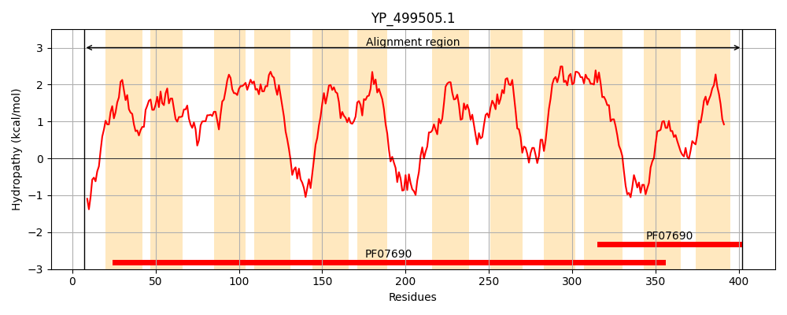
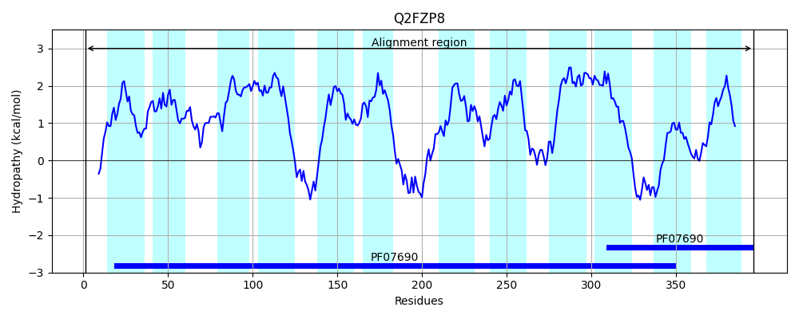
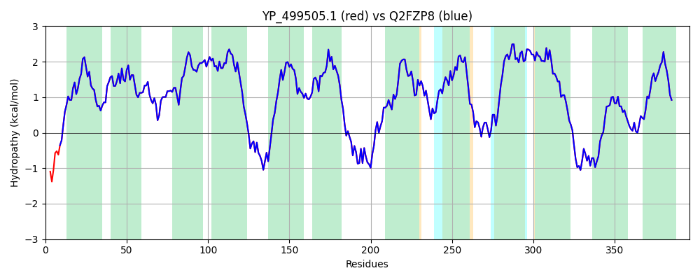

Hit Accession: Q2FZP8
Hit TCID: 2.A.1.2.44
Hit Description: gnl|BL_ORD_ID|13233 gnl|TC-DB|Q2FZP8|2.A.1.2.44 Probable glycolipid permease ltaA OS=Staphylococcus aureus (strain NCTC 8325) GN=ltaA PE=1 SV=2
Mach Len: 396
e:0.000000
Query TMS Count : 12
Hit TMS Count: 12
TMS-Overlap Score: 12.800000
Predicted Substrates:CHEBI:76264;1,2-diacyl-3-O-(beta-D-Glc-(1->6)-beta-D-Glc)-sn-glycerol
BLAST Alignment:
Score: 1997 , Bit scores: 773 bits, E-value: 0.0e+00, Alignment length: 396, Percentage identity: 100
Query: 7 MQDSSLNNYANHKNFILMLIILFLMEFARGMYILSYINFLPTVTSIAVAITSLAFSIHFIADASTNFVIGFLLKKFGTKIVLTTGFILAFTSLFLVIWFPASPFVIIFSAMMLGIAVSPIWVIMLSSVEEDKRGKQMGYVYFSWLLGLLVGMVFMNLLIKVHPTRFAFMMSLVVLIAWILYYFVDVKLTNYNTRPVKAQLRQIVDVTKRHLLLFPGILLQGAAIAALVPILPTYATKVINVSTIEYTVAIIIGGIGCAVSMLFLSKLIDNRSRNFMYGVILSGFILYMILIFTLSMIVNIHILWIIALAIGLMYGILLPAWNTFMARFIKSDEQEETWGVFNSIQGFGSMIGPLFGGLITQFTNNLNNTFYFSALIFLVLAVFYGSYFIVNREKAK 402
MQDSSLNNYANHKNFILMLIILFLMEFARGMYILSYINFLPTVTSIAVAITSLAFSIHFIADASTNFVIGFLLKKFGTKIVLTTGFILAFTSLFLVIWFPASPFVIIFSAMMLGIAVSPIWVIMLSSVEEDKRGKQMGYVYFSWLLGLLVGMVFMNLLIKVHPTRFAFMMSLVVLIAWILYYFVDVKLTNYNTRPVKAQLRQIVDVTKRHLLLFPGILLQGAAIAALVPILPTYATKVINVSTIEYTVAIIIGGIGCAVSMLFLSKLIDNRSRNFMYGVILSGFILYMILIFTLSMIVNIHILWIIALAIGLMYGILLPAWNTFMARFIKSDEQEETWGVFNSIQGFGSMIGPLFGGLITQFTNNLNNTFYFSALIFLVLAVFYGSYFIVNREKAK
Sbjct: 1 MQDSSLNNYANHKNFILMLIILFLMEFARGMYILSYINFLPTVTSIAVAITSLAFSIHFIADASTNFVIGFLLKKFGTKIVLTTGFILAFTSLFLVIWFPASPFVIIFSAMMLGIAVSPIWVIMLSSVEEDKRGKQMGYVYFSWLLGLLVGMVFMNLLIKVHPTRFAFMMSLVVLIAWILYYFVDVKLTNYNTRPVKAQLRQIVDVTKRHLLLFPGILLQGAAIAALVPILPTYATKVINVSTIEYTVAIIIGGIGCAVSMLFLSKLIDNRSRNFMYGVILSGFILYMILIFTLSMIVNIHILWIIALAIGLMYGILLPAWNTFMARFIKSDEQEETWGVFNSIQGFGSMIGPLFGGLITQFTNNLNNTFYFSALIFLVLAVFYGSYFIVNREKAK 396 | Protein Hydropathy Plots: |
|---|
|  |  |
Pairwise Alignment-Hydropathy Plot:
|
|---|
|  |